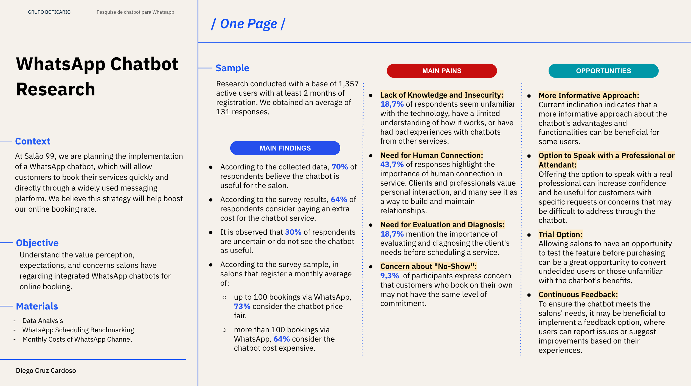
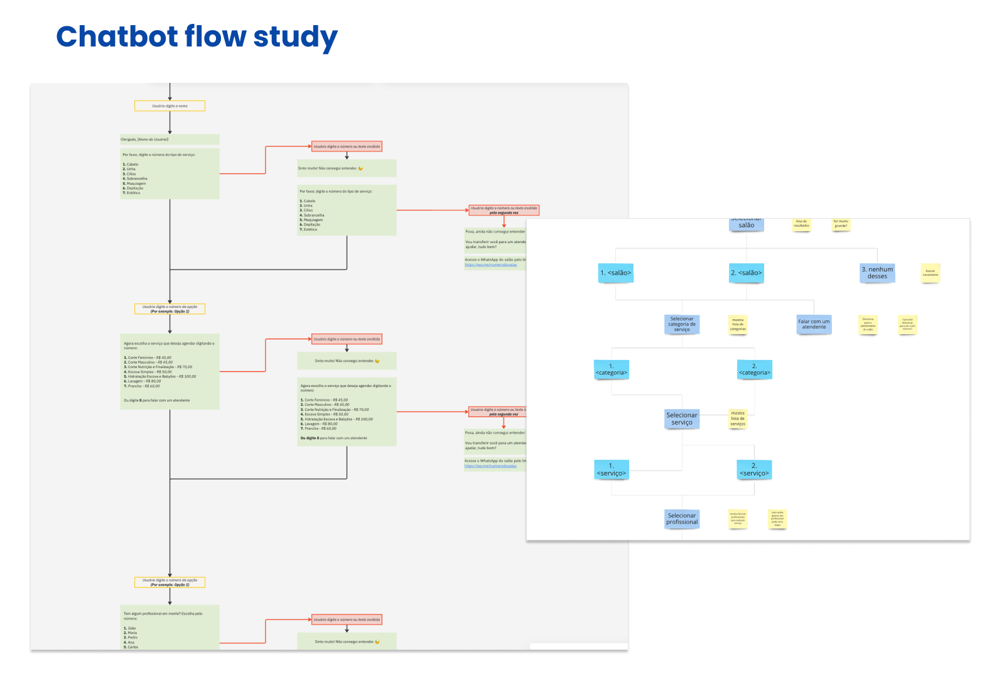

Perceived usefulness
Respondents who believed the chatbot would be useful for their salon.
I designed the conversational experience for Salão99’s WhatsApp booking chatbot, from user research and conversation flows to interaction prototypes, with a focus on trust, clear guidance, and access to human support.
Of respondents saw value in the chatbot
A research signal of perceived usefulness for salons.
The study reached a base of 1,357 active users with at least two months of registration and obtained approximately 131 responses. Research focused on perceived value, expectations, and concerns about WhatsApp-based booking.
Respondents who believed the chatbot would be useful for their salon.
Responses highlighting the importance of personal interaction in service.
Respondents unfamiliar with the technology, unsure how it works, or affected by previous poor experiences.

The research suggested four opportunities for the experience. These principles connect the findings to the proposed product direction.
Make the chatbot’s capabilities and booking benefits understandable before asking salons to adopt it.
Provide the option to speak with a professional or attendant when a request needs personal attention.
A trial was identified as an opportunity to help uncertain users experience the service before purchasing.
A feedback mechanism was proposed so salons could report issues and suggest improvements.
The flow study maps salon selection, service categories, services, and professionals, alongside an option to speak with an attendant. It also explores responses when users enter an invalid option.

The prototypes make the proposed interaction tangible, complementing the flow map with the experience of moving through the conversation.
The research also explored willingness to pay and pricing perceptions. These figures describe survey responses, rather than post-launch conversion or revenue.
Respondents who would consider paying an additional fee for the chatbot service.
Among surveyed salons with up to 100 monthly WhatsApp bookings.
Among surveyed salons with more than 100 monthly WhatsApp bookings.